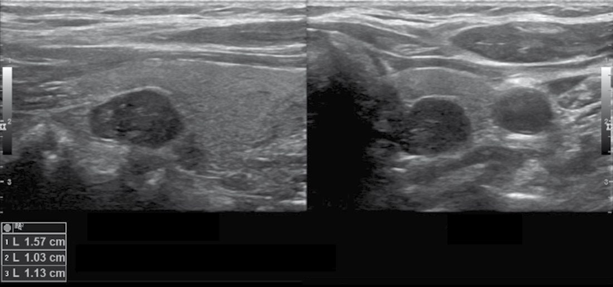
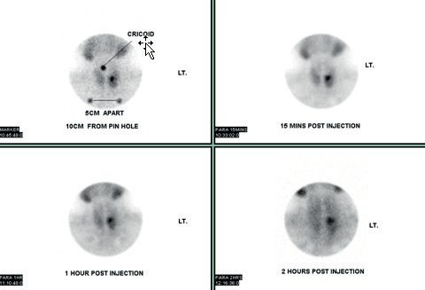
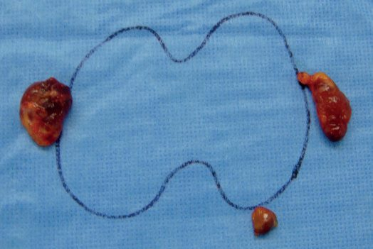
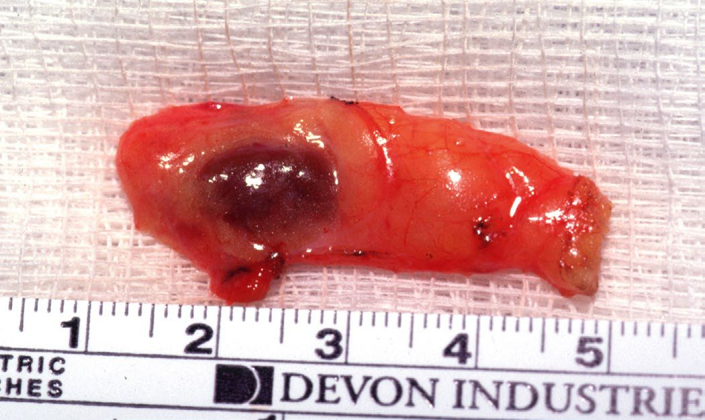

Hyperparathyroidism
Summary
- Primary hyperparathyroidism (PHPT) is the commonest cause of hypercalcaemia, with a prevalence of 0.2–0.5% and around 100,000 new US cases per year; most patients are now identified incidentally on routine biochemistry rather than presenting with classical symptoms [1][2].
- Recent US estimates put the prevalence at 233 per 100,000 in females and 85 per 100,000 in males, with an overall incidence of roughly 50 cases per 100,000 person-years rising with age in both sexes and highest among African American females [3].
- Secondary (renal) hyperparathyroidism arises from chronic kidney disease and vitamin D deficiency, and tertiary hyperparathyroidism describes autonomous PTH secretion persisting after renal transplantation [2].
- Diagnosis is biochemical, and surgery (parathyroidectomy) is curative in the great majority of cases [1].
UK practice is governed by NICE NG132, which covers diagnostic testing in primary care, assessment in secondary care, referral for surgery, surgical management, non-surgical management, monitoring and pregnancy [4]. Two of its recommendations diverge sharply from the international textbook account, and both are set out below: NICE instructs that intraoperative PTH monitoring should not be used in first-time parathyroid surgery [4], and it caps preoperative localisation at two modalities, instructing the surgeon to proceed to four-gland exploration rather than escalate imaging when they disagree [4].
Definition
- Primary hyperparathyroidism is defined as hypercalcaemia in the presence of an unsuppressed and therefore relatively or absolutely elevated PTH level [1].
- At its core, PHPT is a disconnect in the physiological feedback relationship between calcium and PTH secretion, so that a higher concentration of calcium is needed to suppress PTH; this may be due to chief cell proliferation or to a decrease in the concentration of the calcium-sensing receptor within the parathyroid [3].
- Three biochemical patterns follow.
- In most cases PHPT manifests with hypercalcaemia and elevated PTH; but PTH may be inappropriately normal (above 20 pg/mL) in a hypercalcaemic patient (normohormonal PHPT) or inappropriately elevated in a patient with high-normal calcium, normocalcaemic PHPT [3].
- Secondary hyperparathyroidism is a derangement in calcium homeostasis leading to compensatory PTH hypersecretion, occurring primarily from chronic kidney disease (renal hyperparathyroidism) or, less commonly, GI malabsorption, vitamin D deficiency, liver disease or chronic lithium use [1][2].
- Compensatory PTH elevation typically begins once eGFR drops to 45 mL/min, and by the time dialysis is started hyperparathyroidism is nearly ubiquitous [3].
- Tertiary hyperparathyroidism occurs in patients with a history of renal hyperparathyroidism who undergo successful renal transplantation but remain hypercalcaemic with inappropriately elevated PTH from autonomous secretion by all glands; the Oxford Handbook puts this at about 4% and Sabiston at roughly one-fifth of transplanted patients [2][3].
Pathological definitions
- Parathyroid hyperplasia is a diffuse increase in parenchymal cell content, which can include proliferation of chief cells, oxyphils, or both, in several or all glands; when hyperplasia is unequal across the four glands, gross differentiation from adenoma can be challenging, particularly if no clear secondary cause for hyperplasia can be established [3].
- Although the prevailing view is that most parathyroid adenomas are monoclonal proliferations, recent data suggest a substantial number are polyclonal, and polyclonal tumour status is associated with multiple-gland disease [3].
- Cellular atypia (enlarged, irregular or multiple nuclei) does not by itself imply a malignant or premalignant lesion, but adenoma cells usually show low mitotic activity of under 1 per 10 high-power fields, and increased mitotic activity or necrosis should raise suspicion of carcinoma or atypical tumour [3].
- Parathyroid carcinoma accounts for less than 1% of cases of PHPT and is among the rarest malignancies in humans.
- Grossly it obliterates the capsule and tissue planes and infiltrates surrounding structures such as thyroid, fat, trachea, recurrent laryngeal nerve or oesophagus; the WHO histological diagnosis requires at least one of angioinvasion, lymphatic invasion, perineural invasion, invasion into adjacent structures, or metastatic disease [3].
- Where there is clear cellular atypia without any of those criteria, but with increased mitotic activity (over 5 per 10 high-power fields) and/or a Ki67 index above 5%, the WHO applies the term atypical parathyroid tumour, a change from the older 'atypical parathyroid adenoma' that reflects the recognition that the boundary is a continuum, and that metastatic recurrence in atypical adenoma has been reported [3].
- Adenomas typically retain expression of parafibromin, retinoblastoma protein and adenomatous polyposis coli protein; loss of these markers, overexpression of p53, and a Ki-67 index above 5% together favour atypical tumour or carcinoma [3].
Pathophysiology
- The parathyroid glands regulate serum calcium via PTH, an 84-amino-acid peptide secreted in response to low serum calcium (or high magnesium), with a circulating half-life of about 3–5 minutes; PTH acts on the kidney (increasing calcium reabsorption and 1,25-dihydroxyvitamin D hydroxylation), on bone (increasing turnover via osteoblasts and osteoclasts) and, via active vitamin D, on the gut (increasing calcium absorption) [1].
- Within parathyroid chief cells, PTH is created by cleavage from pre-pro-PTH and stored in its biologically active intact form, which allows secretion within seconds and, together with rapid extracellular degradation, gives the hormone its short half-life [3].
- Calcitonin from thyroid parafollicular C cells is the physiological antagonist, decreasing serum calcium by reducing bone turnover [1].
- PHPT is caused by a solitary adenoma in 85% of cases, hyperplasia in 10–15%, double adenoma in about 2–4%, and parathyroid carcinoma in under 1% [1][2].
- Genes regulating the cell cycle, such as MEN1 (encoding menin) and CCND1 (encoding cyclin D1), are implicated in adenoma pathogenesis; somatic MEN1 mutations occur in 12–35% of sporadic cases [1].
- Only prior neck irradiation is a known environmental risk factor for PHPT [1].
- Lithium decreases the sensitivity of the calcium-sensing receptor to calcium, dampening negative feedback and promoting PHPT [3].
- Chronically elevated PTH activates PTH1R, producing bone resorption, increased calcium resorption from the distal convoluted tubule, phosphaturia, and elevated synthesis of 1,25(OH)₂D₃ [3].
- There is preferential loss of bone density at cortical sites, most prominently the distal radius; but there is evidence that PHPT also induces trabecular deterioration in the vertebrae, with an increased risk of vertebral fracture despite relative preservation of vertebral bone density on DXA, a point that matters when a normal spine T-score is used to reassure a patient [3].
- Renal insufficiency is more common among patients with PHPT (15%) than in the general population, with proposed mechanisms including impaired filtration secondary to nephrocalcinosis and hypercalcaemia-induced sodium excretion reducing total body water; the effect appears gradual, and two small randomised trials comparing surgery with observation for asymptomatic PHPT failed to show improvement in eGFR after parathyroidectomy at 1- and 2-year follow-up [3].
- Notably, nephrolithiasis in PHPT is not itself associated with reduced eGFR [3].
Manifestations outside the skeletal and renal systems are extensively reported but hard to prove. The 'soft' signs (anxiety, cognitive dysfunction, fatigue) are thought to be mediated by dysregulation of neurotransmitter synapses from hypercalcaemia, and although observational studies suggest improvement after parathyroidectomy, prospective data have been inconclusive; large observational studies suggest increased cardiovascular mortality in severe PHPT, possibly through increased vascular stiffness or valve calcification, but whether that is meaningful in the mild disease that constitutes most modern diagnoses, and whether it is reversible by surgery, is unknown [3]. Consensus criteria for surgical referral therefore focus on skeletal and renal sequelae, because those are supported by more consistent evidence and are more conducive to measurement and follow-up [3].
In renal (secondary) hyperparathyroidism, phosphate retention from reduced glomerular filtration lowers serum calcium; hyperphosphataemia and reduced renal activation of vitamin D, together with the phosphaturic hormone FGF23 and reduced expression of vitamin D and calcium-sensing receptors, all stimulate PTH secretion, leading to four-gland hyperplasia [1][2]. Vitamin D deficiency is very common and can cause a physiological rise in PTH [2].
Clinical features
- Classically PHPT presented with 'bones, stones, abdominal groans and psychiatric overtones', osteitis fibrosa cystica, brown tumours, renal stones and neuromuscular or psychiatric disturbance, but most patients today are diagnosed incidentally on routine calcium testing and are asymptomatic or have vague constitutional symptoms of fatigue, muscle weakness, depression and mild memory impairment [1].
- Kidney stones remain the most common clinical manifestation of symptomatic PHPT, with 15–20% nephrolithiasis and over 40% hypercalciuria; postmenopausal women may present with osteopenia or osteoporosis disproportionately affecting the distal one-third radius, a cortical catabolic site, rather than the lumbar spine, a cancellous anabolic site [1].
- Band keratopathy is a pathognomonic but now rare sign [1].
- Osteitis fibrosa cystica is characterised by chronic bone pain, pathological fractures usually vertebral, bone cysts and brown tumours, and is now rarely seen in developed nations because PHPT is diagnosed well before this terminal manifestation, a patient presenting with that profile has usually already been exhaustively tested for PHPT, and should raise suspicion of alternative causes such as mutations in FGF23 [3].
- About 10% of patients with PHPT present with, or have a history of, nephrolithiasis, and the rate of asymptomatic nephrolithiasis is likely significantly higher, with some proposing screening renal ultrasound at diagnosis [3].
PHPT is a multisystem disorder with bone disease (reduced bone mineral density, bone pain, rarely osteitis fibrosa cystica), renal disease (calcium-predominant calculi, polyuria, polydipsia, reduced renal function), GI symptoms (nausea, vomiting, constipation, pancreatitis, peptic ulcer), psychological effects (lethargy, low mood, confusion, coma) and cardiovascular effects (short QT, bradycardia, left ventricular dysfunction) [2]. Symptoms of hypercalcaemia in general include muscle weakness, myalgia, nephrolithiasis, pancreatitis, ulcers, depression, bone pain, pathological fractures, mental status changes, constipation and anorexia, with hypertension possibly resulting from renal impairment [5].
There is nothing to find on examination
- Parathyroid conditions are rarely accompanied by clear physical signs, and it is extremely uncommon to be able to palpate an abnormal parathyroid gland in the neck; a palpable neck lump is far more likely to be of thyroid origin [6].
- The only physical signs relate to the functional abnormality, that is, to the hypercalcaemia itself [6].
- Browse's states this plainly for primary hyperparathyroidism: there are generally no physical signs, and although neck examination may reveal a lump in the thyroid region, that could represent an enlarged parathyroid (an adenoma or, rarely, a cancer) but is far more likely to be a coincidental thyroid nodule [6].
- The classical description is 'stones (renal calculi), bones (osteitis fibrosa cystica), abdominal groans (constipation, ileus, pancreatitis) and psychic moans (depression, confusion, dementia-type symptoms)' [6].
- Severe bone disease, bone resorption of the terminal phalanges, brown tumours, and the 'salt and pepper' appearance on skull radiograph, is rarely seen today with earlier diagnosis, whereas bone pain with osteopenia and osteoporosis on DEXA is relatively common [6].
- The symptoms are attributable both to direct effects of PTH on kidney and bone and to the resulting hypercalcaemia, and a small number of patients are truly symptomless [6].
- Direct questioning may reveal non-specific symptoms, tiredness, emotional lability, lack of concentration, thirst, polyuria, anorexia and muscle weakness, many of which are also common in the population at large; the practical argument that they are real is that many patients improve markedly after surgery [6].
Hypoparathyroidism and the hypocalcaemic signs
- The most common cause of hypoparathyroidism, and consequent hypocalcaemia, is damage to or removal of the parathyroids at thyroidectomy [6].
- Early symptoms are tingling and numbness in the fingertips, feet and perioral region. Chvostek's sign is contraction and twitching of the facial muscles when the skin over the facial nerve is tapped at the angle of the jaw where the nerve leaves the parotid gland.
- With a very low calcium the patient may suffer spontaneous carpopedal spasm, and latent tetany can be produced by inflating a sphygmomanometer cuff above systolic pressure, when carpal spasm appears, Trousseau's sign [6].
Renal hyperparathyroidism and parathyroid carcinoma
- Renal (secondary) hyperparathyroidism may be asymptomatic or present with reduced bone mass, pathological fractures, bone pain, pruritus, muscle weakness or psychiatric symptoms; calciphylaxis, with vascular calcification and skin necrosis, is a rare high-morbidity presentation of expanding painful cutaneous purpuric lesions predominantly on the extremities that can progress to ischaemic necrosis, gangrene and sepsis [1][2].
- Early secondary disease is typically asymptomatic, but prolonged disease may manifest with bone pain, weakness and poor quality of life, with persistent hypercalcaemia, hypophosphataemia and anaemia all common [3].
- Parathyroid carcinoma is diagnosed on average a decade earlier than PHPT, with equal gender distribution, a palpable neck mass in 36–52% of cases against under 5% in PHPT, and more exaggerated biochemistry with average calcium 3.75–3.97 mmol/L and PTH 5 to 10 times normal [1].
Etiology
- PHPT is sporadic in most cases; familial forms occur in MEN type 1, type 4, type 2A, hyperparathyroidism–jaw tumour syndrome (HPT-JT), autosomal dominant mild hyperparathyroidism, and familial hypocalciuric hypercalcaemia (FHH), which is not a surgical disease [1].
- The corresponding germline mutations are MEN1 for MEN1, RET for MEN2A, CDKN1B for MEN4, CDC73 for hyperparathyroidism–jaw tumour syndrome, and GCM2 or CASR for familial isolated PHPT [3].
- Childhood exposure to ionising radiation increases the risk of PHPT in later years [3].
- MEN1-associated PHPT presents young at 20–30 years, with over 95% of MEN1 patients developing PHPT by age 40, and is almost always multigland disease requiring bilateral exploration [1][2].
- MEN2A-associated PHPT occurs in about 10–20% of patients, is usually mild, is associated with RET codon 634 mutations, and is often found incidentally during surgery for medullary thyroid cancer, where phaeochromocytoma must be excluded first [1][2].
- HPT-JT arises from inactivating HRPT2/CDC73 mutations encoding parafibromin, presents with early-onset disease at a mean age of 32, often cystic and with severe hypercalcaemia, with ossifying jaw fibromas in about 40%, and carries an increased risk of parathyroid carcinoma [1].
- Browse's notes that primary hyperparathyroidism may be the presenting feature of MEN1 before its other components, pituitary adenomas, growth hormone excess, prolactinoma, gastro-entero-pancreatic neuroendocrine tumours (insulinoma, gastrinoma, glucagonoma, pancreatic polypeptide tumour, VIPoma) and adrenocortical adenoma, become evident [6].
- Lithium-induced hyperparathyroidism occurs in 10–15% of patients on long-term lithium, from either gland hyperplasia or a single adenoma [1].
Renal (secondary) hyperparathyroidism occurs in patients with renal failure who lose calcium through dialysis; about 10% of patients on renal replacement therapy require parathyroidectomy after 10–15 years [2][5]. Parathyroid carcinoma's only known environmental risk factor is prior neck irradiation; over 10% of cases occur in the context of HPT-JT, and up to 18% carry an inactivating PRUNE2 mutation [1].
Causes of hypercalcaemia
- Primary hyperparathyroidism and cancer are the two most frequent causes of hypercalcaemia [6].
- Distinguishing between primary hyperparathyroidism and other sources is relatively straightforward with modern assays for intact PTH and corrected or ionised calcium: the normal physiological response to a raised calcium is a low PTH, so PTH remains inappropriately raised in hyperparathyroidism while in other causes of hypercalcaemia it is low [6].
- Browse's groups the causes as endocrine (primary hyperparathyroidism, tertiary hyperparathyroidism, thyrotoxicosis); malignancy (secondary spread from bronchus, breast, thyroid, prostate or kidney; rare tumours such as a bronchial tumour secreting PTH-related peptide; multiple myeloma; lymphoma); infection (tuberculosis); other (sarcoid); and drugs (vitamin D or calcium tablets, lithium, thiazide diuretics) [6].
- Sabiston frames the same list from the biochemistry: hyperparathyroidism and malignancy are the two most common causes of persistently elevated serum calcium, and other causes readily excluded by a thorough history include vitamin D intoxication, chronic granulomatous disease, and calcium-boosting medications such as lithium and thiazide diuretics [3].
Diagnosis
PHPT is a biochemical diagnosis: elevated total (or ionised) calcium with an inappropriately elevated or unsuppressed PTH, low serum phosphate, normal creatinine and vitamin D; localisation imaging should only follow biochemical confirmation, as positive imaging does not confirm the diagnosis and negative imaging cannot exclude it [1].
Sabiston formalises this into a three-step rule that governs the whole workup. First, confidently establish the diagnosis by history, examination and biochemistry, imaging of any form contributes nothing to this step. Second, determine whether the patient has a meaningful indication for parathyroidectomy. Only after both the diagnosis and the surgical indication are affirmed does parathyroid localisation begin, as the third and final step [3].
Biochemistry
- A typical initial panel is a comprehensive metabolic panel, total serum calcium, intact PTH and 25(OH)D₃ [3].
- Non-parathyroid-mediated hypercalcaemia is usually associated with a suppressed PTH below 20 pg/mL; an elevated or inappropriately normal PTH above 20 pg/mL with hypercalcaemia usually indicates PHPT; and marked PTH elevation above 150 pg/mL should raise consideration of parathyroid carcinoma or renal insufficiency, although benign PHPT remains the most likely diagnosis [3].
- A normal or elevated 25(OH)D₃ excludes secondary hyperparathyroidism from vitamin D deficiency; if it is low, intact PTH should be repeated once vitamin D is repleted [3]. There is little role for ionised calcium in the workup for PHPT, though it may be considered as an adjunct in evaluating normocalcaemic hyperparathyroidism [3].
- Workup also includes careful history (medications, prior head or neck radiotherapy, family endocrinopathies), two or three calcium determinations, chest radiograph, serum protein electrophoresis to exclude myeloma, 24-hour urinary calcium to exclude FHH, and screening for MEN, usually MEN1 [5].
- For hypercalcaemia with normal or mildly elevated PTH, a 24-hour urinary calcium is recommended to rule out FHH: an elevated or normal result is consistent with PHPT, whereas excretion under 100 mg over 24 hours suggests FHH [3].
- The calcium-creatinine clearance ratio, calculated as (24-hour urine Ca × serum Cr) ÷ (serum Ca × 24-hour urine Cr), refines this; a ratio under 0.01 is the most frequently quoted threshold for FHH, though there is considerable overlap with PHPT, vitamin D repletion must be ensured before interpreting it, and confirmatory genetic testing for CaSR mutations is recommended to establish FHH definitively [3].
- Bailey & Love quotes the ratio threshold as under 0.02 [1].
- Getting this right matters because FHH is a benign hypercalcaemic condition with no deleterious consequences that is not improved by parathyroidectomy [3].
- The 24-hour urine calcium, alongside 25(OH)D₃, also helps separate PHPT from secondary hyperparathyroidism due to renal insufficiency, particularly in normohormonal hypercalcaemia, since in the latter both are typically low [3].
Localisation
The objective of preoperative localisation is to minimise the extent of surgical exploration and to identify ectopic glands; localisation studies have little utility in establishing a diagnosis, and rarely contribute to a recommendation for parathyroidectomy [3]. First-line localisation studies are sestamibi scintigraphy and focused neck ultrasonography; 4D CT is used following failed primary surgery or to identify ectopic glands, and SPECT/CT, MRI, CT angiography or selective venous catheterisation are reserved for reoperative surgery [1][2].
| Modality | Appearance / mechanism | Accuracy | Role |
|---|---|---|---|
| Ultrasound | Homogeneous, hypoechoic, well-defined borders, peripheral vascularity | Nearly 90% in experienced hands; as low as 74% reported | First-line; also identifies concurrent thyroid pathology |
| Sestamibi (MIBI) | Oxyphil cells retain the tracer longer than thyroid because of greater mitochondrial content; persistent retention at 2-hour delay indicates parathyroid | 90–97% when augmented with SPECT | First-line or second-line; thyroid nodules can retain tracer and mislead |
| 4D CT | Rapid arterial-phase uptake with rapid washout, unlike thyroid (prolonged retention) or nodes (minimal arterial enhancement) | Pooled accuracy 73% across 34 studies | Superior anatomic detail; smaller or ectopic glands |
| PET/CT with 11C-methionine | Metabolic uptake | Outperformed MIBI, subtraction scintigraphy and ultrasound in one 84-case series | Reoperative or challenging cases |
| MRI | Low-to-moderate T1 signal, high T2 intensity | Detection rates mediocre | Avoids radiation and contrast; reoperative cases |
| Selective venous sampling / arteriography | PTH gradient rather than anatomy | Not applicable | Directs re-exploration by laterality and cervical versus mediastinal origin |
- Table reformats the parathyroid localisation modalities with their mechanisms and accuracy [3].
- Ultrasound is notoriously operator-dependent, which is why the reported range is so wide [3].
- A standard planar MIBI scan provides very little anatomic detail, particularly along the anterior-posterior axis, which is what SPECT adds; a dual-tracer protocol with iodine-123 allows a subtraction scan where thyroid nodules confuse the picture [3].
- Radiation is worth one sentence: the overall dose is similar between 4D CT and MIBI, but preferential radiation to the thyroid is roughly fiftyfold higher with 4D CT, which translates to a lifetime absolute increase in thyroid cancer risk of 0.1% for a 20-year-old female [3].


Secondary disease and carcinoma
- Diagnostic criteria for renal (secondary) hyperparathyroidism are hypocalcaemia or normocalcaemia with elevated PTH, high serum phosphate and low vitamin D; DEXA typically shows osteopenia or osteoporosis [1].
- Parathyroid carcinoma is difficult to diagnose preoperatively as it biochemically resembles PHPT; the WHO 2017 criteria require definite invasion of surrounding soft tissue and/or metastatic disease, and parafibromin/PGP 9.5 immunohistochemistry can help distinguish atypical adenoma from carcinoma, with parafibromin loss giving sensitivity 67% and specificity 100%, and PGP 9.5 positivity sensitivity 78% and specificity 100% [1].
- The main differential diagnosis in PHPT overall is FHH, excluded by a low calcium/creatinine clearance ratio; genetic testing may be offered but requires no treatment [2].
NG132 turns the biochemical workup into a numeric protocol with defined thresholds at each step, and it does so from primary care upwards.
- Who to test.
- Measure albumin-adjusted serum calcium in people with any of: symptoms of hypercalcaemia such as thirst, frequent or excessive urination, or constipation; osteoporosis or a previous fragility fracture; a renal stone; or an incidental finding of elevated albumin-adjusted serum calcium of 2.6 mmol/litre or above [4].
- Consider measuring it in people with chronic non-differentiated symptoms [4]. Do not measure ionised calcium when testing for primary hyperparathyroidism [4], a flat prohibition where the textbook says only that its role is small.
- When to repeat, and when to measure PTH.
- Repeat the albumin-adjusted calcium at least once if the first is 2.6 mmol/litre or above, or 2.5 mmol/litre or above with features of primary hyperparathyroidism present [4].
- Measure PTH when the albumin-adjusted calcium is 2.6 mmol/litre or above on at least 2 separate occasions, or 2.5 mmol/litre or above on at least 2 separate occasions with primary hyperparathyroidism suspected; use a random sample with a concurrent albumin-adjusted calcium; and do not routinely repeat PTH in primary care [4].
- How to read the result.
- Seek specialist advice if PTH is above the midpoint of the reference range with primary hyperparathyroidism suspected, or below the midpoint with a concurrent calcium of 2.6 mmol/litre or above [4].
- Do not offer further investigation if PTH is within but below the midpoint of the reference range and the concurrent calcium is below 2.6 mmol/litre [4].
- Look for alternative diagnoses, including malignancy, if PTH is below the lower limit of the reference range [4].
- NICE's use of the midpoint of the reference range as the decision line is a sharper instrument than the textbook's 'inappropriately normal', and worth remembering.
- Secondary care assessment.
- Measure vitamin D in people with a probable diagnosis and offer supplements if needed [4].
- To differentiate primary hyperparathyroidism from familial hypocalciuric hypercalcaemia, measure urine calcium excretion using any one of a 24-hour urinary calcium excretion, a random renal calcium:creatinine excretion ratio, or a random calcium:creatinine clearance ratio [4], NICE does not privilege the 24-hour collection.
- Once the diagnosis is confirmed, assess symptoms and comorbidities, measure eGFR or serum creatinine, do a DXA scan of the lumbar spine, distal radius and hip, and do an ultrasound scan of the renal tract [4].
- Including the distal radius is not incidental, it is the cortical site where PHPT preferentially strips bone.
- Localisation is capped at two modalities.
- Offer preoperative imaging, usually ultrasound, if it will inform the surgical approach; consider a second modality, usually a sestamibi scan, if it will further guide the approach [4].
- Then the instruction that diverges from the escalating imaging algorithm in the textbooks: do not offer more preoperative imaging if the first-modality and second-modality scans do not identify an adenoma or are discordant [4]. Proceed with surgery, performed by a surgeon with expertise in 4-gland exploration, even if preoperative imaging has not identified an adenoma [4].
- NICE thus stops where Sabiston's algorithm would move on to PET/CT and selective venous sampling.
- If imaging shows an ectopic adenoma, refer the person to a centre with the relevant expertise [4].
Scoring and Severity
Hypercalcaemia is graded by severity: mild-to-moderate elevation (under 3 mmol/L and 3–3.5 mmol/L respectively) is usually asymptomatic and managed by treating the underlying cause; a total calcium above 3.5 mmol/L constitutes a hypercalcaemic crisis requiring aggressive medical management, and calcium above 4.5 mmol/L can cause coma and cardiac arrest [1].
- Intraoperative PTH monitoring uses the Miami criteria: a drop in PTH into the normal range and to less than half the maximum preoperative value at 10 minutes post-excision accurately predicts single-gland cured disease [1].
- Sabiston separates the two criteria in use.
- The Vienna criterion is a reduction in intraoperative PTH by at least 50% within 10 minutes of excision compared with the highest pre-excision baseline; the Miami criterion is satisfaction of the Vienna criterion plus normalisation of the intraoperative PTH, and rigorous adherence to these criteria has reduced the rate of persistent PHPT after surgery to under 5% in most large series [3].
- Because the systemic half-life of PTH is 3 to 5 minutes, samples are typically taken before excision and at 5 and 10 minutes after; and because manipulating the gland may cause a brief spike in secretion, preoperative levels are drawn both at induction and immediately before ligation of the parathyroid vascular pedicle [3].
- Cure from PHPT is defined as normalisation of calcium and PTH at 6 months or more after parathyroidectomy; elevation of either marker within 6 months is persistent disease, and elevation beyond 6 months after an initial interval of normalisation is recurrent disease [3].
- Bailey & Love uses a 6-week cut-off for persistence, quoting about 6% in sporadic disease and 16–20% in hereditary disease, with a missed adenoma the usual cause of persistence and new adenoma formation or tumour implants the usual cause of recurrence [1][5].
- Postoperative hypocalcaemia is distinguished as 'hungry bone' syndrome (normal PTH, decreased bicarbonate, increased urinary cAMP) versus aparathyroidism (decreased PTH, normal bicarbonate, normal urinary cAMP) [5].
- Hungry bone syndrome is defined as hypocalcaemia persisting more than 4 days after surgery, and is secondary to unchecked osteoblastic calcium uptake accompanying the dramatic fall in PTH; it is reported in roughly 13% of patients after parathyroidectomy for PHPT and up to 50% after surgery for secondary or tertiary disease [3].
Hyperparathyroidism-induced hypercalcaemic crisis is variably called hyperparathyroid crisis, parathyroid storm or parathyroid crisis; incidence is reported between 2% and 7% of PHPT cases, confounded by inconsistent diagnostic criteria, and a common definition is an albumin-corrected calcium above 14 mg/dL with elevated PTH and clinical symptoms [3]. Unlike PHPT it has a female-to-male ratio closer to 1:1 and a mortality as high as 7%; PTH in the range 300 to 960 pg/mL is typical, and severe hypercalcaemia with a normal or minimally elevated PTH should prompt assessment for a second contributing cause such as advanced malignancy, sarcoidosis or thyrotoxicosis [3].
NHS England genetic testing criteria for hereditary PHPT recommend testing for patients presenting before age 35, or before 45 with multigland involvement, hyperplasia on histology, jaw ossifying fibromas, or an affected first-degree relative [1].
Treatment and Management
There is general consensus that patently symptomatic PHPT (kidney stones, pathological fractures) should be treated surgically [3]. For the asymptomatic majority, the AAES and the American Society for Bone and Mineral Research recommend definitive surgical treatment for any patient satisfying one or more of the following [3]:
1. serum calcium exceeding the upper limit of normal by at least 1.0 mg/dL (0.25 mmol/L); 2. DXA T-score of −2.5 or lower at lumbar spine, total hip, femoral neck or distal radius; 3. vertebral fracture; 4. eGFR under 60 mL/min; 5. nephrolithiasis or nephrocalcinosis; 6. age under 50 years.
- The two bodies then differ.
- The ASBMR recommends parathyroidectomy for 24-hour urine calcium excretion above 250 mg/day in females and above 300 mg/day in males, whereas the AAES threshold is above 400 mg/day without sex stratification [3].
- The ASBMR does not recommend surgical referral for PHPT associated with impaired cognition, cardiovascular conditions or impaired quality of life, citing insufficient evidence; the AAES conversely expands the indications to include neurocognitive and neuropsychiatric symptoms, cardiovascular disease, and patients unwilling to comply with medical management [3].
- The Oxford Handbook and the ABSITE Review give a list matching the ASBMR/AAES core criteria [2][5].
Non-operative management
Two pieces of received wisdom are wrong. Calcium restriction is counterproductive: because of the inverse sigmoidal relationship between PTH and serum calcium, restricting calcium intake produces minimal change in serum calcium and may exacerbate PTH elevation, and the Endocrine Society recommends against dietary calcium restriction, supporting supplementation consistent with general population guidelines of 1000–1200 mg daily from all sources [3]. Vitamin D supplementation does not worsen hypercalcaemia in PHPT; deficiency is actively detrimental because PTH regulation responds by rising further, and in a meta-analysis of retrospective studies vitamin D supplementation was associated with lower PTH levels without worsening hypercalcaemia [3].
- Pharmacological management is for patients who meet surgical indications but are not appropriate surgical candidates or cannot achieve a surgical cure, and has two objectives: preserving or improving bone mineral density, and reducing hypercalcaemia [3].
- There is tier 1 evidence that bisphosphonates, most commonly alendronate, significantly improve bone mineral density in PHPT; as antiresorptives they have no effect on serum calcium, and unlike parathyroidectomy there are no compelling data that they reduce long-term fracture risk [3]. Denosumab likewise improves density and reduces bone turnover without affecting calcium [3]. Cinacalcet is the treatment of choice where correction of hypercalcaemia is the primary goal: a meta-analysis of four randomised trials found it significantly increased the likelihood of normocalcaemia and reduced PTH against placebo, but with no effect on bone density or urinary calcium [3].
- The DENOCINA trial randomised osteopenic or osteoporotic PHPT patients to placebo, denosumab alone, or cinacalcet plus denosumab: density improved with denosumab, and calcium normalised with cinacalcet [3].
- Taken together, bisphosphonates are first-line in the osteoporotic patient who cannot have surgery, denosumab second-line, and cinacalcet added to correct significant hypercalcaemia, but no pharmacological treatment has been shown to reduce fracture risk or cardiovascular events, so patients who meet consensus indications should be told that surgery is the most durable and comprehensive treatment [3].
- Bailey & Love reaches the same conclusion, adding that cinacalcet normalises calcium with a PTH reduction but does not change bone mineral density or urinary calcium [1].
Hypercalcaemic crisis
- Hypercalcaemic crisis is treated with aggressive rehydration at 200–500 mL/h of normal saline targeting a urine output above 100 mL/h, then loop diuretics once volume is restored; for advanced malignancy with calcium above 3 mmol/L, bisphosphonates are first-line, with calcitonin as a rapid-onset bridge and glucocorticoids to potentiate calcitonin and reduce intestinal calcium absorption [1].
- Sabiston's sequence adds the timings that make the order rational: most patients are hypovolaemic, so intravenous saline is the critical first step and may be expected to drop calcium by roughly 2 mg/dL; loop diuretics follow after euvolaemia and consistent urine output are established; bisphosphonates inhibit bone resorption but typically do not take effect until 48 hours, with intravenous zoledronic acid superior to pamidronate in malignancy and possibly faster in onset, though contraindicated in acute kidney injury; and calcitonin has rapid onset, promoting calciuresis and lowering calcium by 1 mg/dL within 2 to 6 hours, but developing tachyphylaxis within 48 hours, so combination with a bisphosphonate is recommended over calcitonin alone [3].
- For refractory cases and in renal insufficiency, dialysis with a low-calcium dialysate is effective [3].
- Parathyroidectomy is recommended once the patient is medically optimised, and there does not appear to be a clear advantage to expediting resection [3].
Secondary and tertiary disease
- Renal (secondary) hyperparathyroidism is medically managed with a low-phosphate diet, phosphate binders, vitamin D supplementation such as alfacalcidol, and calcimimetics; most patients, about 95%, do not need surgery [2][5].
- Unlike PHPT there is no consensus set of criteria for surgical referral; most centres recommend surgery for secondary or tertiary disease that is symptomatic or has persistent electrolyte derangement despite maximal medical management, with the degree of PTH elevation a consideration, KDIGO recommends maintaining PTH at two to nine times the normal range, an upper limit of 585 pg/mL, though thresholds of 500 or 800 have also been cited [3].
- Surgical indications include failure to maintain calcium and phosphate targets, refractory elevated PTH with intractable pruritus, osteoporosis, fracture or bone pain, calciphylaxis, severe psychological symptoms, or patient preference; bone pain is the most common indication, and pruritus responds in about 80% [2][5].
- In large retrospective series, patients with secondary or tertiary disease who undergo parathyroidectomy experience a significant increase in bone mineral density and a lower risk of hip fracture, and those operated on while still on dialysis tend to have a durable effect after subsequent transplant with lower rates of tertiary disease and less need for post-transplant cinacalcet, yet fewer than 5% of transplanted patients undergo parathyroidectomy before transplantation [3].
- Tertiary hyperparathyroidism should not be operated on during the 12–18 months after transplantation, as most patients regain normal calcium homeostasis spontaneously [2].
- Sabiston explains the reason for that window: iatrogenic hypercalcaemia from vitamin D or cinacalcet given for secondary disease typically improves within a month of transplantation once those drugs are stopped, but a delayed phase of recurrent hypercalcaemia is commonly noted roughly 6 months thereafter, so consideration of parathyroidectomy is typically deferred to 9 to 12 months post-transplant [3].
- The AAES supports parathyroidectomy as the treatment of choice for tertiary disease and recommends surgical referral within 12 months post-transplant if hypercalcaemia persists, while acknowledging low-quality evidence; a small randomised trial comparing parathyroidectomy with cinacalcet found no difference in rate of normocalcaemia, PTH, bone density or creatinine [3].
- Referral for surgery.
- Refer people with a confirmed diagnosis to a surgeon with expertise in parathyroid surgery if they have symptoms of hypercalcaemia such as thirst, frequent or excessive urination or constipation; or end-organ disease, meaning renal stones, fragility fractures or osteoporosis; or an albumin-adjusted serum calcium level of 2.85 mmol/litre or above [4].
- Consider referral even in people who do not have any of those features [4].
- That threshold is worth comparing with the AAES/ASBMR list above.
- With a typical upper limit of normal of 2.60 mmol/litre, the international criterion of 0.25 mmol/litre above the upper limit gives the same 2.85 mmol/litre, so the two agree on the calcium number.
- Where they part company is everything else: NICE folds DXA T-score, vertebral fracture and nephrolithiasis into the single phrase end-organ disease, sets no eGFR criterion, and (most strikingly) sets no age criterion, so the international automatic referral of every patient under 50 has no NICE equivalent.
- NICE compensates by making referral considerable for anyone with the diagnosis, which is a broader net loosely cast rather than a set of specific triggers.
- Type of surgery.
- Offer a choice of either 4-gland exploration or focused parathyroidectomy to people whose preoperative imaging shows a single adenoma in the neck, and discuss what happens in each operation, how well each works, the anaesthetic used, how long each takes, the likely size of the scars, and the risks [4].
- Offer 4-gland exploration to people whose imaging does not identify a single adenoma [4], and consider it where first- and second-modality scans are discordant [4].
- Do not use intraoperative PTH monitoring in first-time parathyroid surgery [4].
- This is the sharpest divergence on the page.
- Sabiston describes intraoperative PTH as a requisite component of minimally invasive parathyroidectomy, and Bailey & Love builds the conversion decision around the Miami criteria.
- NICE simply removes it from first-time surgery.
- The UK registry data below are consistent with the NICE position.
- Follow-up after surgery.
- Measure albumin-adjusted serum calcium and PTH before discharge, to provide a baseline for later follow-up [4].
- Measure albumin-adjusted serum calcium 3 to 6 months after surgery to confirm whether it has succeeded; if it is within the reference range at that point, regard the surgery as successful and monitor calcium once a year [4].
- For unsuccessful surgery, conduct a multidisciplinary review at a specialist centre covering the initial operative findings, previous imaging and histology, and the clinical and biochemical indications for repeat surgery, and offer monitoring; any repeat surgery should be done at a centre with expertise in reoperative parathyroid surgery [4].
- Non-surgical management.
- Consider cinacalcet for people in whom surgery has been unsuccessful, is unsuitable or has been declined, and whose albumin-adjusted serum calcium is either 2.85 mmol/litre or above with symptoms of hypercalcaemia, or 3.0 mmol/litre or above with or without symptoms [4].
- For the first group, base the decision to continue on how well it reduces symptoms; for the second, on how well it reduces either symptoms or the calcium level [4].
- Consider a bisphosphonate to reduce fracture risk in people with primary hyperparathyroidism and increased fracture risk, but do not offer bisphosphonates for chronic hypercalcaemia of primary hyperparathyroidism [4].
- That pairing matches the textbook pharmacology exactly (bisphosphonates act on bone, not on calcium) but states it as an instruction rather than a mechanism.
- Monitoring.
- Offer monitoring to everyone diagnosed with primary hyperparathyroidism [4].
- After successful surgery, measure albumin-adjusted serum calcium once a year.
- For those who have not had surgery or whose surgery was unsuccessful, measure albumin-adjusted serum calcium and eGFR or serum creatinine once a year unless taking cinacalcet, in which case follow the summary of product characteristics; consider a DXA scan at diagnosis and every 2 to 3 years; and offer renal tract ultrasound at diagnosis, at presentation, and if a renal stone is suspected.
- If monitoring raises concerns, repeat the calcium measurement or refer for surgery as above.
- Where a person has osteoporosis or renal stones, seek a specialist opinion on monitoring according to local pathways, and for people who have had surgery for multigland disease or whose disease recurs after successful surgery, seek a specialist endocrine opinion.
- Assess cardiovascular risk and fracture risk in everyone with primary hyperparathyroidism [4].
- Pregnancy. Offer parathyroid surgery to women who have primary hyperparathyroidism and are considering pregnancy [4], a pre-emptive recommendation with no textbook equivalent.
- Discuss the management of a pregnant woman with a specialist-centre multidisciplinary team including an obstetrician, a physician with expertise in primary hyperparathyroidism, a surgeon, a midwife and an anaesthetist, referring for specialist care if needed [4].
- Do not offer cinacalcet, and do not offer a bisphosphonate, to pregnant women with primary hyperparathyroidism [4].
- Be aware that these women are at increased risk of hypertensive disease in pregnancy [4], and consult the specialist centre multidisciplinary team for advice on monitoring [4].
Surgeries
For a localised single adenoma, minimally invasive or focused parathyroidectomy is a safe alternative to four-gland exploration, with reduced postoperative hypocalcaemia, shorter operating time and better cosmesis; conversion to bilateral exploration is guided by intraoperative PTH failing to fall per the Miami criteria [1]. Bilateral neck exploration is required for negative or discordant imaging, MEN1 or MEN2A-associated disease, or lithium-induced PHPT: all four glands are identified via a transverse Kocher's incision, and three-and-a-half glands are resected leaving a marked, vascularised half gland in situ, or alternatively all four glands are removed with forearm (brachioradialis) autotransplantation [1][5].
In a meta-analysis of observational studies and randomised trials, there was no difference in cure rate between bilateral neck exploration and minimally invasive parathyroidectomy; bilateral exploration was associated with higher rates of postoperative haemorrhage, hypocalcaemia and recurrent laryngeal nerve injury, though the absolute differences in risk were low, and it is speculated that multigland disease may be under-recognised and that routine bilateral exploration might yield more durable normocalcaemia [3]. Localisation studies such as sestamibi scans allow limited 'mini-incision' parathyroidectomy under local anaesthesia, providing improved cosmesis, shorter stay and fewer complications for suitable patients [7].
Anatomy and the search
- The superior parathyroid glands are classically posterior to the superior thyroid poles, posterior and lateral to the course of the recurrent laryngeal nerve, and typically close to the intersection between the middle thyroid vein and the nerve; their position is relatively predictable [3].
- The inferior glands are usually inferior and posterior to the lower poles, medial to the recurrent laryngeal nerves along the tracheo-oesophageal groove, and their anatomy is more variable [3].
- In sequence of average proximity to the nerve, the glands run right upper (closest), left upper, left lower, right lower [3].
- Ectopic parathyroids are reported in up to 16% of cases, the commonest scenario being an ectopic lower gland within the cervical or superior mediastinal thymus, which is why cervical thymectomy commonly accompanies subtotal or total parathyroidectomy, or is performed where intraoperative PTH fails to respond appropriately despite bilateral exploration [3].
- Other common ectopic positions are the carotid sheath, superiorly along the superior thyroid pole vessels, retro-oesophageal and retropharyngeal, and glands are uncommonly found under the thyroid capsule or within the thyroid itself [3].
- That last possibility has led to the practice of ipsilateral thyroid lobectomy when a gland cannot be found; Sabiston's authors uncommonly perform a blind lobectomy and favour ultrasound or bivalving the lobe, especially if an internal jugular PTH gradient of 10% is demonstrated [3].
- If four normal glands are found and a missing gland is suspected ectopic, locations to check include the thymus (most common), near the carotids, near vertebral bodies, superior to the pharynx, or intrathyroidal; if still not found, close and follow PTH, obtaining a sestamibi scan if PTH remains elevated [5].
- At reoperation, the most common location for a 'missing' gland is its normal anatomic position [5].
- Supernumerary parathyroid glands occur in 7–13% of people and may lie in the thymus (most commonly), thyroid parenchyma, tracheo-oesophageal groove, mediastinum, or elsewhere in the neck [7].
- At bilateral exploration, when the fourth gland cannot be found, the thyrothymic ligament should be mobilised and the upper end of the thymus gently retracted into the field for dissection and removal of any mass; the carotid sheath should be opened from the bifurcation to the base of the neck and explored; and intraoperative ultrasonography can examine the thyroid lobe on the side of the missing gland for an intrathyroidal location [7].
- Rare mediastinal adenomas, under 1% of all parathyroid adenomas, can be resected via sternotomy or thoracoscopy [1].
Operative principles
- Careful respect of embryological tissue planes is critical, because bleeding in the field quickly obscures the delineation of parathyroid from surrounding tissue; once the gland is identified, dissection focuses on avoiding capsular disruption, which can cause parathyromatosis and the need for additional, higher-risk operations [3].
- In bilateral exploration, exposing glands that are expected to be normal requires close attention to their native vasculature, because compromise of the feeding pedicle can cause temporary or even permanent hypoparathyroidism [3].
- Novel approaches such as transaxillary and transoral endoscopic or robotic parathyroidectomy give options to patients who wish to avoid a cervical incision, but the core surgical principles have not changed [3].
- Intraoperative parathyroid autofluorescence at 820 nm under near-infrared excitation detects parathyroid tissue with sensitivity and accuracy exceeding 90%, and indocyanine green with perfusion angiography can map both the gland and its vascular pedicle; but near-infrared light penetrates only about 5 mm, so both techniques mainly confirm a gland already fully exposed, which makes them more relevant to avoiding inadvertent parathyroid excision during thyroidectomy than to localisation during planned parathyroidectomy [3].
Multigland and renal disease
- For parathyroid hyperplasia, glands should not all be biopsied, since that risks haemorrhage and hypoparathyroidism; treatment is resection of three-and-a-half glands or total parathyroidectomy with autoimplantation [5].
- Subtotal parathyroidectomy is the planned resection of three glands with partial resection of the fourth: bilateral exploration identifies all four, the smallest is assigned as the remnant, a portion of it is excised leaving a 40- to 80-mg remnant (roughly one to two times the size of a normal gland) with an intact vascular pedicle whose viability is assessed by colour and by bleeding at the cut edge, and the remaining three are excised after marking the in situ remnant with permanent suture for future identification [3].
- With total parathyroidectomy and autotransplantation, all four glands are excised and a portion of one is morcellated sharply into fragments under 1 mm, aspirated in 1 mL of normal saline, and injected immediately into muscle (typically brachioradialis or sternocleidomastoid) percutaneously or by cut-down; if direct exposure is used, a pocket within well-vascularised muscle with meticulous haemostasis is encouraged, because a surrounding haematoma will compromise incorporation of the implant [3].
- In a small randomised trial, total parathyroidectomy with autotransplantation outperformed subtotal parathyroidectomy in calcium normalisation and clinical symptoms, and has the advantage that later re-excision of additional tissue is far simpler in the forearm than in a reoperative cervical field; but NSQIP data show longer operating time and length of stay, and in a meta-analysis of 18 studies and over 3,500 patients there was no difference between the techniques in symptomatic improvement, persistent disease, recurrence rate or reoperation, with persistent disease in 6% after subtotal and 2% after total-with-autotransplantation, and reoperation rates of 5.3% and 5.8% [3].
- The AAES recommends subtotal parathyroidectomy as the preferred option for patients with enlargement of all four glands, while acknowledging that surgeon preference remains a key contributor [3].
- For renal disease, options are total parathyroidectomy with forearm or sternocleidomastoid autotransplantation, or subtotal parathyroidectomy leaving a remnant of the smallest gland; preoperative localisation is not required [2][5]. Total parathyroidectomy without autotransplantation is contraindicated in patients who are candidates for future renal transplantation [7].
- Cervical thymectomy is performed routinely for MEN1-associated PHPT, given the risk of supernumerary glands most commonly found in the thymic tail, and in secondary hyperparathyroidism [1][5].


Carcinoma
For suspected parathyroid carcinoma, treatment is en bloc resection (parathyroidectomy with ipsilateral thyroid lobectomy and central neck dissection) taking great care to avoid tumour capsule spillage, which risks seeding and recurrence; complete R0 resection has not clearly been shown to reduce local recurrence in recent studies, adjuvant chemotherapy has no proven survival benefit, and external beam radiotherapy may be considered case by case [1][5].
The UK registry data bear directly on the two NICE recommendations that diverge from the textbooks.
- On intraoperative PTH.
- The registry's own summary is that "the benefit of intra-operative PTH in first-time parathyroidectomy seems small (<2%)", with a significant improvement in persistent hypercalcaemia overall in first-time parathyroid surgery, but not in targeted parathyroidectomy with intraoperative PTH in the 2016–2020 dataset [8].
- That is a UK-population estimate of the effect size NICE judged too small to mandate.
- The registry also records that in familial disease, intraoperative PTH showed no significant benefit in reducing persistent disease, in contrast to the findings in first-time surgery for sporadic disease [8].
On the trade-off in multigland disease. The number of glands removed at first-time parathyroidectomy for primary hyperparathyroidism sets persistent disease against permanent hypoparathyroidism, and the registry quantifies both ends.
| Glands removed at first-time parathyroidectomy | Persistent hypercalcaemia | Late hypocalcaemia |
|---|---|---|
| 0 glands | 33.8% | Not applicable |
| 1 gland | 3.0% | Lowest |
| 2 glands | 7.0% | Intermediate |
| 3 glands | 8.6% | 6.8% |
| 3.5 glands | 3.6% (cure rate 96.4%) | 23% |
| 4 glands | Cure rate 96.8% | 48% |
- Table reformats UK registry outcomes by number of glands removed at first-time parathyroidectomy for primary hyperparathyroidism [8].
- The registry's own reading is blunt: three-and-a-half and four-gland excision achieve excellent cure rates of 96.4% and 96.8% respectively, "but at the cost of an unacceptably high rate of late hypocalcaemia of 23% and 48%", whereas three-gland excision improves late hypocalcaemia to 6.8% at the expense of raising persistent disease to 8.6% [8].
- There is, in other words, no free option in multigland disease, and the preoperative conversation has to name which of the two failures the patient would rather risk.
One curiosity in the same table repays reading: persistent hypercalcaemia was only 34%, not 100%, when zero glands were removed. The registry offers three explanations, absence of persistent hypercalcaemia does not exclude persistent hyperparathyroidism, which would be better defined if PTH, urine calcium and vitamin D were recorded; the diagnosis of primary hyperparathyroidism may have been wrong in some of these patients; or surgery may have devascularised glands with consequent loss of function [8].
- Familial disease is harder.
- Persistent disease was more likely after surgery for familial disease (35/441, or 7.9%) than sporadic (504/11,776, or 4.3%), and rose to 15.4% (95% CI 9.9–23.0%) after reoperation [8].
- In that group, three-and-a-half gland excision gave the lowest persistence at 1.2% but early and late hypocalcaemia rates of 32% each, while four-gland excision gave an early hypocalcaemia rate of 38.8% (95% CI 25.5–53.8%) [8].
Renal disease. Persistent hypercalcaemia was observed more often after targeted renal parathyroidectomy (14%) than after more extensive resection, and was significantly less likely after three-and-a-half or four-gland excision than lesser operations; late hypocalcaemia was very common at 61% overall after renal parathyroid surgery and increased significantly with the number of glands removed [8].
- Practice trends.
- Targeted parathyroidectomy is undertaken in approximately half of first-time parathyroidectomies and that proportion has not changed much over the past decade; conventional parathyroidectomy is often undertaken in first-time surgery even when localisation is positive [8].
- Approximately 30% of targeted and over 20% of conventional parathyroid operations are now day-case procedures, and intraoperative nerve monitoring was used in over 40% of first-time, over 50% of redo and 40% of renal parathyroid operations in 2020 [8].
Complications
- Permanent hypoparathyroidism, defined as a continuing need for calcium and vitamin D replacement at 1 year, is rare after PHPT surgery at 0.5% but more common after surgery for secondary hyperparathyroidism at 4–12%; symptoms include circumoral and digital paraesthesia, carpopedal or laryngeal spasm and cardiac arrhythmias, with Chvostek's and Trousseau's signs elicitable [1].
- Sabiston's figures for elective parathyroidectomy in experienced hands are lower still: transient hypocalcaemia occurs in 1.6% of minimally invasive parathyroidectomies and up to 13.2% of bilateral explorations, and permanent hypocalcaemia in less than 0.2% of cases, which is why single-gland excision at minimally invasive parathyroidectomy does not require postoperative calcium assessment or supplementation, although some surgeons individualise this after bilateral exploration [3].
- Temporary vocal cord palsy occurs in under 1% of cases and is not consistently different between approaches across studies; permanent vocal cord palsy is higher with bilateral exploration in several studies but the absolute risk is under 0.2%, and although intraoperative neuromonitoring of the recurrent laryngeal nerve is widely used, there is no prospective evidence proving that it reduces the rate of nerve injury [3].
- Reoperation carries an increased risk of RLN injury and permanent hypoparathyroidism [5].
- Acute symptomatic hypocalcaemia is an emergency treated with intravenous and oral calcium and vitamin D, for example 10 mL of 10% calcium gluconate slowly intravenously, with attention to serum magnesium given its synergistic transport with calcium [1].
- Recovery after parathyroidectomy for secondary or tertiary disease is more complex than for PHPT, with longer stay and higher complication and readmission rates; hungry bone syndrome affects up to 50% of these patients, with risk lower in tertiary than secondary disease and lower after subtotal than after total-with-autotransplantation, and nearly all patients experience transient hypocalcaemia after total parathyroidectomy with autotransplantation [3].
- Most centres give immediate postoperative oral calcium carbonate and calcitriol, some starting up to a week preoperatively; hypocalcaemia refractory to oral supplementation is treated with intravenous calcium gluconate; native calcium levels typically nadir 2 to 3 days after surgery; and hypomagnesaemia and hypophosphataemia commonly accompany bone deposition and require vigilant supplementation [3].
- Rates of persistent hypocalcaemia and hypoparathyroidism after surgery for secondary or tertiary disease may be in the 5% to 20% range depending on the operation and the duration of vitamin D supplementation [3].
GI complications of primary hyperparathyroidism include peptic ulcer disease, acute pancreatitis (usually only with calcium above 12.5 mg/dL) and cholelithiasis, the last presumably from increased biliary calcium excretion; hepatitis is not associated [7].
Calciphylaxis
- Calciphylaxis, also called calcific uraemic arteriolopathy, is a highly morbid condition usually seen in dialysis patients though it can affect earlier stages of CKD; it occurs in about 4% of patients undergoing surgery for renal hyperparathyroidism and carries high morbidity and mortality from ischaemic necrosis, gangrene and sepsis [1].
- It presents with ischaemic, painful, persistent skin wounds that progress to ulceration and infection, with ischaemia of muscle, viscera and eyes also described; the pathogenesis is thought to be small vessel calcification, and skin biopsy often shows microthrombosis and fibrointimal hyperplasia [3].
- Risk factors are inconsistent across reports but include female sex, autoimmune disease, hypercoagulability, obesity and calcium-raising medications, and calciphylaxis is not exclusive to patients with severe hypercalcaemia or very high PTH [3].
- The relationship with warfarin is particularly notable: as well as repressing vitamin K-dependent coagulation factors, warfarin affects vitamin K-dependent inhibitors of vascular calcification such as matrix Gla protein, inducing vascular calcification in animal models, although in a patient who recently started warfarin, tissue ischaemia must also raise consideration of warfarin-induced necrosis [3].
- Diagnosis is by punch or incisional biopsy that includes the edge of a suspected lesion and adjacent normal skin, showing calcification, thrombosis and fibrointimal hyperplasia of arterioles with septal panniculitis; there is no laboratory marker [3].
- Treatment is supportive and multidisciplinary, with wound care paramount, chemical debridement of small non-infected ulcerations and surgical debridement of larger or infected necrotic areas, plus multimodal renally-adjusted analgesia, cinacalcet, sodium thiosulfate and phosphate binders to control PTH, and discontinuation or very judicious use of vitamin D and its analogues [3].
- The EVOLVE trial comparing cinacalcet with placebo noted a threefold lower rate of calciphylaxis in the cinacalcet arm [3].
- The role of parathyroidectomy is controversial: some recommend early resection, while an alternative is to restrict surgery to refractory cases with PTH above 300 ng/mL despite cinacalcet, and where it is indicated, subtotal or total parathyroidectomy is preferred over more limited resections to avoid persistent or recurrent disease [3].
Prognosis
Biochemical cure of PHPT is achieved in about 97% of patients when the adenoma is localised preoperatively and 93% when localisation is negative in experienced centres, with follow-up recommended for a minimum of 6 months [2]. Reported cure rates after parathyroidectomy range from 90% to 99%, though selection and publication bias must be considered, and it is generally accepted that a volume-outcome relationship governs the efficacy of the index operation [3].
- What surgery actually buys is clearest for bone.
- In a systematic review of randomised trials of surgery versus non-operative management, parathyroidectomy provided little to no effect on bone mineral density at lumbar spine or femoral neck, on left ventricular ejection fraction, on renal impairment, or on all-cause mortality at 12 to 24 months, but most trials were underpowered, the meta-analysis including only 447 participants in total, and length of follow-up proved decisive [3].
- Ten-year outcomes from the Scandinavian Investigation of Primary Hyperparathyroidism randomised trial gave clear evidence of a treatment effect: patients in the observation arm lost T-score at all compartments over time, and compared with those controls the 10-year change in T-score in parathyroidectomy patients was 0.41 higher at the radius and 0.58 higher at the lumbar spine, although an absolute increase from baseline was seen only at the lumbar spine, at +0.36 [3].
- Across large population-level longitudinal cohorts this benefit translates into a significant reduction in long-term fracture probability [3].
- Extraskeletal outcomes are less definitive.
- In the Medicare population, parathyroidectomy is associated with a lower incidence of major cardiovascular events and cardiovascular mortality, with an absolute risk reduction of roughly 1.5%, but randomised trials show no effect on left ventricular ejection fraction at 24 months [3].
- Data that parathyroidectomy improves renal function in impaired eGFR are scarce: a Danish National Patient Registry study found no change in eGFR among patients with impaired kidney function at baseline, and a large US veteran target-trial emulation found a reduced probability of eGFR decline only in patients younger than 60 [3].
- Among patients presenting with PHPT and a history of nephrolithiasis, parathyroidectomy is not associated with a reduction in future kidney stone events [3].
- Parathyroidectomy for tertiary disease may cause a transient reduction in eGFR of approximately 25%, but in most studies allograft function recovers to at least pre-operative levels by about 1 year, suggesting the detriment is from haemodynamic shifts during surgery rather than a durable effect [3].
- For MEN1-associated PHPT, despite extensive bilateral surgery, persistent and recurrent disease rates remain high at up to 62%, as do rates of permanent postoperative hypocalcaemia at up to 47% [1].
- Parathyroid carcinoma is an indolent but progressive disease; recurrence rates range from 33–80%, typically within the first 3 years, with overall survival of 85–90% at 5 years and 49–77% at 10 years, and mortality chiefly from uncontrolled hypercalcaemia rather than tumour bulk [1][5].
- The ABSITE Review separately reports a 50% 5-year survival and 50% recurrence for parathyroid cancer, noting lung as the most common metastatic site and limited efficacy of chemoradiotherapy, with palliative debulking surgery an option to control calcium [5].
References
- Bailey & Love's Short Practice of Surgery, 28th ed., Ch. 56
- Oxford Handbook of Clinical Surgery, 5th ed., Ch. 7
- Sabiston Textbook of Surgery, 22nd ed., Ch. 74
- NICE Guideline NG132: Hyperparathyroidism (primary) — diagnosis, assessment and initial management (2019), 1.1.1; 1.1.2; 1.1.3; 1.1.4; 1.1.5; 1.1.6; 1.1.7; 1.1.8; 1.1.9; 1.1.10; 1.2.1; 1.2.2; 1.2.3; 1.3.1; 1.3.2; 1.4.1; 1.4.2; 1.4.3; 1.4.4; 1.4.5; 1.4.6; 1.4.7; 1.4.8; 1.4.9; 1.4.10; 1.4.11; 1.4.12; 1.4.13; 1.4.14; 1.5.1; 1.5.2; 1.5.3; 1.5.4; 1.5.5; 1.6.1; 1.6.1, Table 1; 1.7.1; 1.7.2; 1.7.3; 1.7.4; 1.7.5; 1.7.6 www.nice.org.uk
- The ABSITE Review, 2022, Parathyroid chapter
- Browse's Introduction to the Symptoms and Signs of Surgical Disease, 6th ed., Ch. 12, Table 12.4
- Schwartz's Principles of Surgery: ABSITE and Board Review, Ch. 38 Thyroid, Parathyroid, and Adrenal
- British Association of Endocrine and Thyroid Surgeons: Sixth National Audit Report 2021, United Kingdom Registry of Endocrine and Thyroid Surgery (UKRETS), data 2016–2020, Executive summary; MEN / familial pathologies: hypocalcaemia; MEN / familial pathologies: outcomes; MEN / familial pathologies: persisting hypercalcaemia; Persisting hypercalcaemia and glands removed; Renal parathyroid surgery: outcomes www.e-dendrite.com